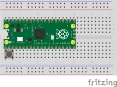
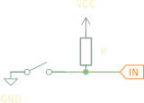

Robotika 4. óra
2025
Pause button

Újabb ⚡ kitérő

Újabb ⚡ kitérő

Pause button
Pin button(BUTTON_PIN, GPIO_IN, true);
// ...
void pause_callback() {
uint64_t now = time_us_64();
if (now - last_pause_us ≥ BUTTON_DEBOUNCE_INTERVAL_MS * 1000) {
last_pause_us = now;
toggle();
}
}
// ...
add_irq(button.pin, true, &pause_callback);
PID
- feladat: maradjunk a faltól valamilyen távolságra
- ötlet: a távolság valahányszorosát adjuk a motornak
PID
PID
\[ u(t) = K_{\text{p}} e(t) \]
PID
\[ u(t) = K_{\text{p}} e(t) + K_{\text{i}} \int_{0}^{t}e(\tau)\, \mathrm {d} \tau \]
PID
\[ u(t) = K_{\text{p}} e(t) + K_{\text{i}} \int_{0}^{t}e(\tau)\, \mathrm {d} \tau + K_{\text{d}} {\frac{\mathrm {d} e(t)}{\mathrm {d} t}} \]
példa videóPID
pid.h
#pragma once
#include <stdint.h>
class PID {
float K_p;
float K_i;
float K_d;
float last_error;
int64_t last_compute_t;
float error(float target);
float integral;
float min_integral;
float max_integral;
float P(float pv);
float I(float pv, int64_t dt);
float D(float pv, int64_t dt);
public:
float sp;
PID(float _sp, float _K_p, float _K_i, float _K_d,
float _min_integral, float _max_integral);
float compute(float pv);
};
PID
pid.cpp
#include "pid.h"
#include "pico/stdlib.h"
float PID::error(float pv) {
return sp - pv;
}
float PID::P(float pv) {
return K_p * error(pv);
}
float PID::I(float pv, int64_t dt) {
return K_i * (integral += error(pv) * dt);
}
float PID::D(float pv, int64_t dt) {
return K_d * ((error(pv) - last_error) / dt);
}
PID::PID(float _sp, float _K_p, float _K_i, float _K_d,
float _min_integral, float _max_integral)
: K_p(_K_p),
K_i(_K_i),
K_d(_K_d),
last_error(0),
last_compute_t(0),
min_integral(_min_integral),
max_integral(_max_integral),
sp(_sp) {}
float PID::compute(float pv) {
int64_t now = time_us_64(), dt = now - last_compute_t;
float result = P(pv) + I(pv, dt) + D(pv, dt);
last_error = error(pv);
last_compute_t = now;
return result;
}